Phase 1 satellite beams are fully active across Kathmandu Valley with 100% line-of-sight coverage anchored by our Maitidevi Gateway.
Our low-altitude satellite grid provides overlapping orbital cells covering the entire Kathmandu Valley basin, eliminating geographic dead zones common with traditional line-of-sight wireless towers.
Subscribers in Maitidevi, Baneshwor, Thamel, Lalitpur, and Bhaktapur enjoy continuous high-bandwidth connectivity directly via the Maitidevi Primary Ground Terminal.

Select your neighborhood within Kathmandu to check direct satellite line-of-sight and ground relay metrics:
Network Status: Online
Expected Latency: 20 ms
Connected Gateway: Maitidevi Hub
DEPLOY SERVICE IN THIS AREAResidential and Enterprise satellite service active across Kathmandu, Lalitpur, and Bhaktapur with Maitidevi gateway telemetry.
Deployment of western satellite downlink stations and expansion of Roam mobile kits for trekking routes and resorts.
Remote district connectivity for schools, rural clinics, and high-altitude Himalayan monitoring outposts.